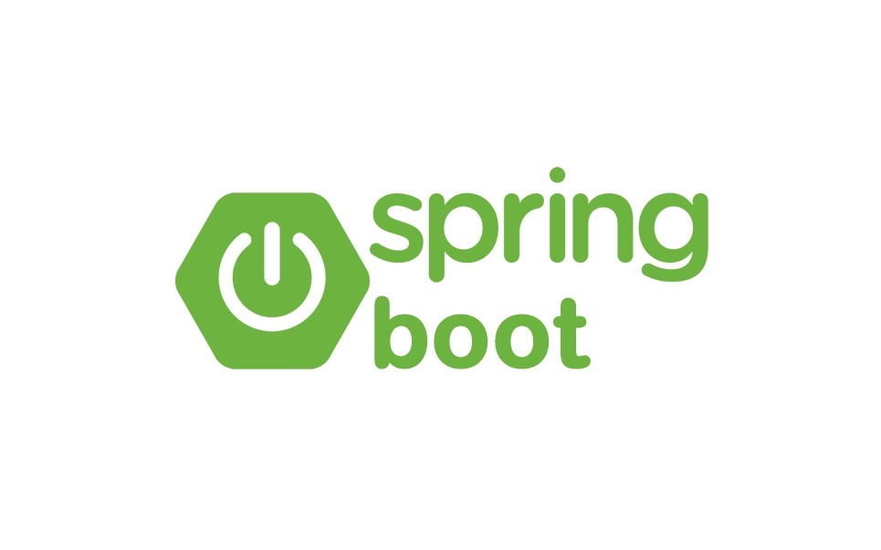
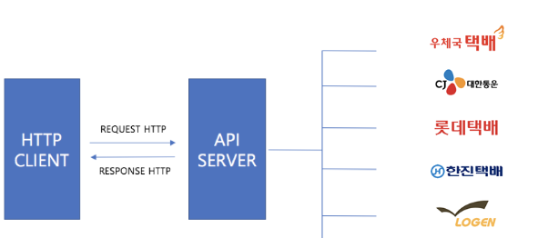
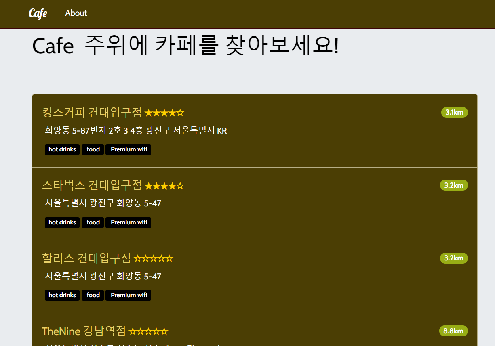
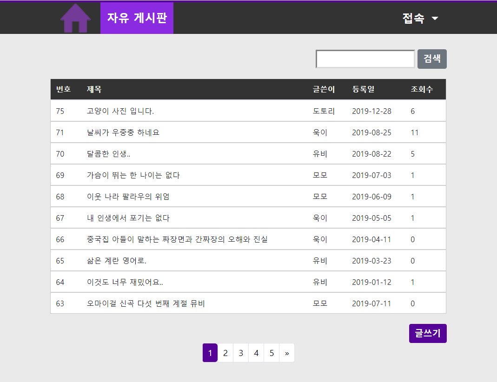
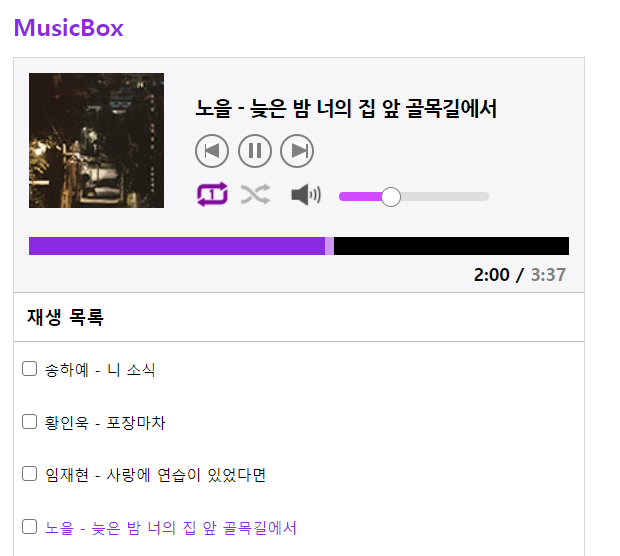
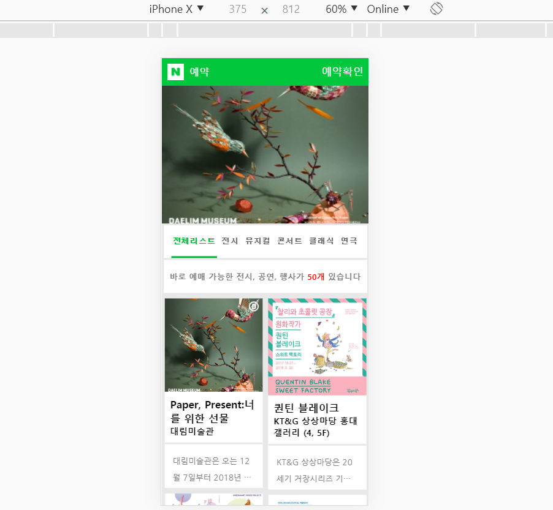
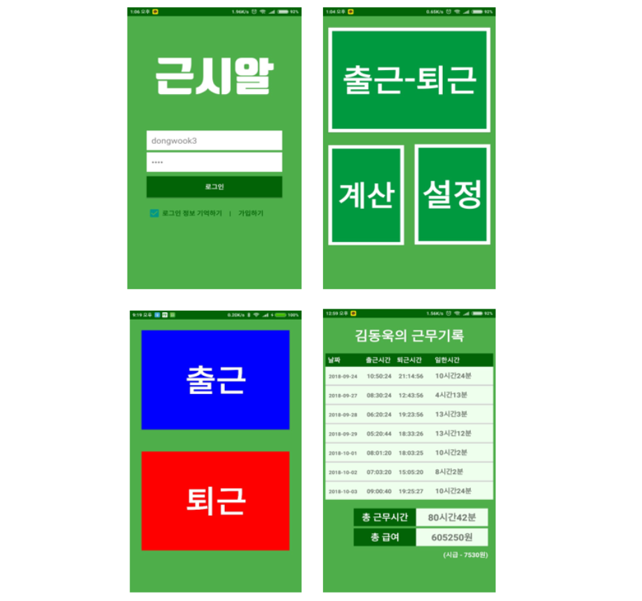

<!DOCTYPE html>
<html lang="en">

<head>

    <meta charset="utf-8">
    <meta name="viewport" content="width=device-width, initial-scale=1, shrink-to-fit=no">
    <meta name="description" content="">
    <meta name="author" content="">

    <title>포트폴리오</title>

    <!-- Bootstrap Core CSS -->

    <link href="vendor/bootstrap/css/bootstrap.min.css" rel="stylesheet">


    <!-- Custom Fonts -->

    <link href="vendor/fontawesome-free/css/all.min.css" rel="stylesheet" type="text/css">


    <link href="https://fonts.googleapis.com/css?family=Source+Sans+Pro:300,400,700,300italic,400italic,700italic"
          rel="stylesheet" type="text/css">


    <link href="vendor/simple-line-icons/css/simple-line-icons.css" rel="stylesheet">

    <!-- Custom CSS -->

    <link href="css/stylish-portfolio.css" rel="stylesheet">

</head>

<body id="page-top">

<!-- Navigation -->
<a class="menu-toggle rounded" href="#">
    <i class="fas fa-bars"></i>
</a>
<nav id="sidebar-wrapper">
    <ul class="sidebar-nav">
        <li class="sidebar-brand">
            <a class="js-scroll-trigger" href="#page-top">메뉴</a>
        </li>
        <li class="sidebar-nav-item">
            <a class="js-scroll-trigger" href="#page-top">홈</a>
        </li>
        <li class="sidebar-nav-item">
            <a class="js-scroll-trigger" href="#about">소개</a>
        </li>
        <li class="sidebar-nav-item">
            <a class="js-scroll-trigger" href="#portfolio">프로젝트</a>
        </li>
        <!--
        <li class="sidebar-nav-item">
          <a class="js-scroll-trigger" id="contact">연락처</a>
        </li>
        -->
    </ul>
</nav>

<!-- Header -->
<header class="masthead">
    <div class="container text-center my-auto">
        <div class="row">
            <div class="col-lg-10 mx-auto">
                <h1 class="mb-1 align-left">백엔드 개발 김동욱입니다.</h1>
                <h3 class="mb-5 align-left">
                    <em class="date">2025</em>
                </h3>
            </div>
        </div>
        <!-- 
        <a class="btn btn-dark btn-xl js-scroll-trigger" href="#about">더보기</a>
        -->
    </div>

    <div class="overlay"></div>
</header>

<!-- About -->
<section class="content-section bg-light" id="about">
    <div class="container text-center">
        <div class="row">
            <div class="col-lg-10 mx-auto">
                <h2 class="align-left">소개</h2>
                <p class="lead mb-5 align-left" style="font-family:'Courier';font-weight: bold; font-size:16px;">
                    안녕하세요 저는 4년간 컴퓨터 공학을 전공하며 CS지식들과 C, Java, Javascript,  Python 등 여러 프로그래밍 언어들을 학습했습니다.
                    알고리즘을 좋아하고 논리적으로 생각하는 일에 흥미가 생겨 백엔드 개발을 시작했습니다. 물류 스타트업 IT서비스 회사에 신입개발자로 처음 입사하게 되어 2년간 Java 웹 백엔드 개발자로 근무했습니다.
                    내부의 커다란 웹 서비스를 고도화 하고, 다양한 백엔드 서버들을 관리하며, 신규 프로젝트를 개발하는 업무를 진행했습니다. 시니어, 주니어 개발자들과 함께 협업하고 여러 서버들의 코드들을 보고 프로세스를 파악하면서 실무 개발역량을 늘렸습니다.
                    그리고 실제 운영환경에서 실시간 이슈 발생시 로그를 확인하여 빠르게 원인을 분석하고 대응하면서 문제해결능력을 길렀습니다. 그동안 직접 보고 경험했던 노하우와 기술들을 최대한 활용하여 웹 서비스에 적용하겠습니다.
                </p>
                <h5 class="align-left" style="padding-top: 30px;">학교</h5>
                <p class="align-left">2009 ~ 2012 안양고등학교 졸업</p>
                <p class="align-left">2012 ~ 2019 한경대학교 컴퓨터공학과 졸업</p>
                <p class="subjectTitle">[전공 과목/학점]</p>
                <p class="subject">프로그래밍입문(C언어) / A</p>
                <p class="subject">Java프로그래밍(Java) / A</p>
                <p class="subject">웹프로그래밍(Javscript) / B+</p>
                <p class="subject">웹서비스 컴퓨팅(Node.js) / B+</p>
                <p class="subject">시스템 프로그래밍(리눅스) / B+</p>
                <p class="subject">엔터프라이즈 응용 프로그래밍(EJB) / A</p>
                <p class="subject">모바일 앱개발(Android) / A</p>
                <p class="subject">알고리즘 / B+</p>
                <p class="subject">데이터베이스 / B</p>
                <p class="subject">운영체제 / B+</p>
                <p class="subject">네트워크 / C+</p>
                <p class="subject">컴퓨터 구조 / A+</p>
                <h5 class="align-left" style="padding-top: 30px;">자격증</h5>
                <p class="align-left">정보처리기사</p>
                <h5 class="align-left" style="padding-top: 30px;">주요경력</h5>
                <p class="align-left">2022.01 ~ 2023.12 파스토 <a style="font-size: 10px">[Series C: 약 1000억 아기유니콘]</a> 자바
                    백엔드 개발 (2년)</p>
                <h4 class="align-left" style="padding-top: 30px;">보유기술</h4>
                <div style="padding: 0 0 0 15px;">
                    <!-- <h4 class="align-left">보유기술</h4> -->
                    <p class="align-left ski">- Java, Spring MVC, SpringBoot, Javascript, Mysql, Mybatis</p>
                    <p class="align-left ski">- Linux, Gradle</p>
                    <p class="align-left ski">- Git</p>
                    <p class="align-left ski">- IntelliJ</p>
                    <h5 class="align-left">협업 툴</h5>
                    <p class="align-left ski">- Confluence, JIRA, Slack</p>
                </div>
                <!--
              <div style="padding: 0 0 0 15px;">
               <h4 class="align-left">Sub</h4>
                <p class="align-left ski">- JavaScript</p>
                <p class="align-left ski">- NodeJs, Python</p>
                <p class="align-left ski">- AWS EC2</p>
                <a id="moreview" class="btn btn-dark btn-xl js-scroll-trigger" href="#portfolio">▼</a>
              </div>
              -->
                <h5 class="align-left" style="padding-top: 30px;">연락처</h5>
                <p class="align-left ski" style="font-size: 18px">Email: ehddnr1022@gmail.com</p>
                <p class="align-left ski" style="font-size: 18px">Phone: 010-5852-2354</p>
                <p class="align-left ski" style="font-size: 18px">Github: <a target="_blank"
                                                                             href="https://github.com/wook101">https://github.com/wook101</a>
                </p>

            </div>
        </div>
    </div>

</section>


<!-- Portfolio -->
<section class="content-section" id="portfolio">
    <div class="container">

        <div class="content-section-heading text-center">
            <h3 class="text-secondary mb-0">Portfolio</h3>
            <h2 class="mb-5">프로젝트</h2>
            <h2 class="mb-3 align-left subtitle" style="color:#000000">Web</h2>
        </div>

        <h3 style="text-align: center;margin: 10px 0px 30px 0px">2022 ~ 2023 파스토</h3>

        <div class="row no-gutters">
            <div class="col-lg-6 ">
                <a class="portfolio-item portfolio-web-item" style="height: 100%">
            <span class="caption project5">
              <span class="caption-content">
                <h2>파스토</h2>
                <p class="mb-0"></p>
              </span>
            </span>
                    
                </a>
            </div>
            <div class="col-lg-6">
                <div class="portfolio-item portpolio_web_explain">
                    <div class="explain">
                        <h3>파스토 물류 풀필먼트 시스템 개발(FMS)</h3>
                        <p>사용기술 : Java, Spring, Mysql, Javascript, jsp</p>
                        <div>
                            요약설명 : 상품, 입고, 출고, 반품, 재고 등 물류 프로세스 처리를 위한 웹 서비스<br>
                            ◆ 자사 물류 벡엔드 서버 고도화 및 실시간 이슈 대응<br>
                            ◆ 기존 이미지 파일 업로드 로컬 시스템을 AWS S3로 전환하여 가용성 및 확장성 향상<br>
                            ◆ 고객게시판 1:1문의 유형을 기존 1Depth에서 2Depth로 개선하여 세분화된 항목 제공<br>
                        </div>
                    </div>
                </div>
            </div>
        </div>

        <div class="row no-gutters">
            <div class="col-lg-6 ">
                <a class="portfolio-item portfolio-web-item" style="height: 100%">
            <span class="caption project4">
              <span class="caption-content">
                <h2>카페24</h2>
                <p class="mb-0"></p>
              </span>
            </span>
                    
                </a>
            </div>
            <div class="col-lg-6">
                <div class="portfolio-item portpolio_web_explain">
                    <div class="explain">
                        <h3>카페24 API 연동</h3>
                        <p>사용기술 : Java, Spring, Mysql, Javascript, jsp</p>
                        <div>
                            요약설명 : 카페24 관리자 아이디 연동 개발<br>
                            ◆ 카페24 인증 서버에 Access Token 발급을 요청하여 카페24 API 호출에 필요한 권한 획득 기능 구현(OAuth 2.0 인증 방식)<br>
                            ◆ 카페24 앱 설치시 리다이렉트 된 후 성공 및 실패 화면 연결<br>
                            ◆ 카페24 쇼핑몰 관리자의 상품정보, 주문정보 API를 조회하여 고객에게 정보 제공<br>
                        </div>
                    </div>
                </div>
            </div>
        </div>

        <div class="row no-gutters">
            <div class="col-lg-6 ">
                <a class="portfolio-item portfolio-web-item" style="height: 100%">
            <span class="caption project5">
              <span class="caption-content">
                <h2>Connectivity API</h2>
                <p class="mb-0"></p>
              </span>
            </span>
                    
                </a>
            </div>
            <div class="col-lg-6">
                <div class="portfolio-item portpolio_web_explain">
                    <div class="explain">
                        <h3>Connectivity API</h3>
                        <p>사용기술 : Java, SpringBoot, Mysql, Mybatis <br>
                        </p>
                        <div>
                            요약설명 : 파스토 물류 시스템(FMS)과 창고 관리 시스템(외부 WMS) 사이 통신을 위한 인터페이스 중계 API<br>
                            ◆ 상품, 입고, 출고 등 도메인 별로 패키지를 분리하여 도메인의 흐름을 파악하기 쉽게 설계<br>
                            ◆ 물류 데이터 파싱 처리시 Builder Pattern과 자바 Stream을 적극적으로 활용하여 가독성 확대<br>
                            ◆ 수 백건의 출고, 재고 데이터 등록시 bulk insert를 사용하여 커밋 비용을 줄이고 한번의 트랙잭션 처리로 성능 향상<br>
                            ◆ 스프링이 제공하는 @RestControllerAdvice와 @ExceptionHandler를 사용하여 예외처리, 기준이 되는 글로벌 익셉션을 지정하고 도메인 별로 익센션을 설정하여 유지보수에 용이<br>
                            ◆ DB에서 반복적으로 조회되는 외부 서버 host 프로퍼티 설정 정보들에 대해 Caffeine 캐싱 라이브러리를 적용하여 효과적으로 처리<br>
                        </div>
                    </div>
                </div>
            </div>
        </div>

        <div class="row no-gutters">
            <div class="col-lg-6 ">
                <a class="portfolio-item portfolio-web-item" style="height: 100%">
            <span class="caption project6">
              <span class="caption-content">
                <h2>TMS</h2>
                <p class="mb-0"></p>
              </span>
            </span>
                    
                </a>
            </div>
            <div class="col-lg-6">
                <div class="portfolio-item portpolio_web_explain">
                    <div class="explain">
                        <h3>TMS API</h3>
                        <p>사용기술 : Java, SpringBoot, Mysql, Mybatis</p>
                        <p>
                            요약설명 : 한진, CJ, 팀프레시, 체인로지스, 롯데 등 택배사의 가송장 번호 발급, 택배 접수, 송장 정보 출력 등을 담당하는 API<br>
                            ◆ 약 20만건의 배송 데이터 전체 조회 쿼리의 실행으로 힙 메모리 초과 이슈, No offset 방식과 인덱스를 사용하여 데이터를 1만건씩 페이징 처리하여 개선<br>
                            ◆ 짧은 순간 동일한 가송장 번호로 발행되는 이슈 발생, 해당 조회 쿼리에 비관적 배타락을 걸어 다른 트랜잭션들은 접근하지 못하도록 동시성 제어<br>
                            ◆ 하루의 모든 재고 정보를 조회하는 API 간헐적 통신 오류 발생, Retry 횟수를 3회로 설정하고 실패시 긴급 Slack 채널에 알림을 발송하여 대응<br>
                            ◆ 택배 송장 용지에 들어가는 정보를 넣기 위해 ZPL 언어를 이용하여 x,y 좌표를 설정하고 폰트를 조절하여 요구사항에 맞게 출력되도록 구현
                        </p>
                    </div>
                </div>
            </div>
        </div>

        <h3 style="text-align: center;margin: 100px 0px 30px 0px">2020 ~ 2021 개인 프로젝트</h3>
        <div class="row no-gutters">
            <div class="col-lg-6 ">
                <a class="portfolio-item portfolio-web-item" style="height: 100%">
            <span class="caption project3">
              <span class="caption-content">
                <h2>Cafe</h2>
                <p class="mb-0"></p>
              </span>
            </span>
                    
                </a>
            </div>
            <div class="col-lg-6">
                <div class="portfolio-item portpolio_web_explain">
                    <div class="explain">
                        <h3>내 주위에 Cafe정보를 제공하는 서비스</h3>
                        <p>사용기술 : Javascript, MongoDB, Express, Node.js, naver cloud platform, Heroku</p>
                        <p>
                            요약설명 : ● 사용자의 현재위치정보를 기준으로 주위에 있는 카페들의 정보들을 보여줍니다.<br>
                            ● 카페 위치를 동적인 지도로 보여주기 위해 NaverCloudPlatform서비스의 WebDynamicMap을 사용했습니다.<br>
                            ● 카페 방문자들의 리뷰를 보여주며, 리뷰등록이 가능합니다. <br>
                            ● DB는 외부 MongoDB atlas에 구축했습니다.<br>
                            ● view는 jade템플릿 엔진을 사용했습니다.<br>
                            ● 프로젝트의 restApi는 /app_server와 /app_api로 분리되어 있습니다.<br>
                            ● app_server - (router, contorller, view)<br>
                            ● app_api - (router, contorller, model)<br>
                        </p>
                        <p>프로젝트 배포상태(stop) : <a style="font-weight: bold" href="https://cafemean.herokuapp.com"
                                         target="_blank">https://cafemean.herokuapp.com</a></p>
                        <p>github : <a style="font-weight: bold"
                                       href="https://github.com/wook101/MEAN_Webservice_Project"
                                       target="_blank">소스코드</a></p>
                    </div>
                </div>
            </div>
        </div>

        <div class="row no-gutters">
            <div class="col-lg-6 ">
                <a class="portfolio-item portfolio-web-item" style="height: 100%">
            <span class="caption project1">
              <span class="caption-content">
                <h2>게시판</h2>
                <p class="mb-0"></p>
              </span>
            </span>
                    
                </a>
            </div>
            <div class="col-lg-6">
                <div class="portfolio-item portpolio_web_explain">
                    <div class="explain">
                        <h3>커뮤티니 게시판</h3>
                        <p>사용기술 : Java, SpringMVC, mysql, awsEC2</p>
                        <p>
                            요약설명 : ● 웹 게시판은 SpringMVC 패턴입니다.<br>
                            ● 프로젝트 패키지들은 dao, service, controller레이어 구조입니다.<br>
                            ● 기본적인 기능들은 게시글의 생성, 조회, 수정, 삭제, 페이징 입니다.<br>
                            ● 추가적인 기능들은 이미지 업로드, 회원가입, 로그인, 유효성검사 입니다.<br>
                            ● 반응형 웹으로 시도했습니다.<br>
                            ● awsEC2서버에 tomcat, jre, mysql를 설치 후 웹 어플리케이션(.WAR)을 배포했습니다.<br>
                        </p>
                        <p>프로젝트 배포상태(stop) : <a style="font-weight: bold" href="http://15.164.98.244:8080/board"
                                                target="_blank">http://52.78.33.224:8080/board</a></p>
                        <p>github : <a style="font-weight: bold" href="https://github.com/wook101/board"
                                       target="_blank">소스코드</a></p>
                    </div>
                </div>
            </div>
        </div>

        <div class="row no-gutters">
            <div class="col-lg-6 ">
                <a class="portfolio-item portfolio-web-item" style="height: 100%">
            <span class="caption project2">
              <span class="caption-content">
                <h2>뮤직 플레이어</h2>
                <p class="mb-0"></p>
              </span>
            </span>
                    
                </a>
            </div>
            <div class="col-lg-6">
                <div class="portfolio-item portpolio_web_explain">
                    <div class="explain">
                        <h3>뮤직 플레이어</h3>
                        <p>사용기술 : Javascript, NodeJs, heroku</p>
                        <p>
                            요약설명 : ● 저만의 웹 뮤직 플레이어를 만들었습니다.<br>
                            ● 주요 기능들은 곡의 재생, 이전, 다음, 반복, 셔플입니다. <br>
                            ● 자바스크립트의 audio객체가 지원하는 load, loadeddata, ended 이벤트를 사용했습니다.<br>
                            ● document의 mouseUp, mouseDown, mouseMove 이벤트를 이용하여 진행바 및 사운드바를 구현했습니다.<br>
                            ● 곡들의 정보가 담겨있는 뮤직 차트에서 원하는 곡을 플레이리스트에 담은뒤 재생합니다.<br>
                        </p>
                        <p>프로젝트 배포상태(stop) : <a style="font-weight: bold" href="https://playmusicbox.herokuapp.com"
                                         target="_blank">https://playmusicbox.herokuapp.com</a></p>
                        <p>github : <a style="font-weight: bold" href="https://github.com/wook101/MusicPlayer"
                                       target="_blank">소스코드</a></p>
                    </div>
                </div>
            </div>
        </div>


        <!--
        <div class="row no-gutters">
            <div class="col-lg-6 img_area">
              <a class="portfolio-item portfolio-web-item">
                <span class="caption">
                  <span class="caption-content">
                    <h2>naver예약서비스</h2>
                    <p class="mb-0"></p>
                  </span>
                </span>
                
              </a>
            </div>
            <div class="col-lg-6">
                <div class="portfolio-item portpolio_web_explain">
                    <div class="explain">
                        <h3>naver예약 서비스</h3>
                        <p>사용기술 : Java, jsp, Spring, Mysql</p>
                        <p>간단소개 : 스프링MVC패턴 학습을 위해 모바일 웹앱으로 naver예약서비스를 만들었습니다.
                          부스트코스 웹프로그래밍 과정을 참고하여 프로젝트 기획의 요구사항에 맞게 기능들을 구현했습니다.
                          많은 웹프로그래밍 동영상 강의를 학습했고 인터넷에서 많은 자료를 찾아보며 만든 프로젝트입니다.
                          웹풀스택 과정을 구현 해보면서 웹 애플리케이션의 프론트엔드와 백엔드의 전체적인 흐름을 파악했던 프로젝트 입니다.
                          (edwith 부스트코스 웹프로그래밍 과정을 참고했습니다.)</p>
                        <p>깃허브 : <a style="font-weight: bold" href="https://github.com/wook101/ReservationService" target="_blank">자세히 보기</a></p>
                        <em style="font-size: 16px">웹호스팅 서비스로 서버에 프로젝트를 배포하여 테스트를 완료했습니다.</em>
                    </div>
                </div>
            </div>
        </div>
        -->
        <!--
      <div class="content-section-heading text-center">
        <h2 class="mb-3 align-left subtitle" style="color:#000000">Mobile</h2>
      </div>
      <div class="row no-gutters">
        <div class="col-lg-6 ">
          <a class="portfolio-item portfolio-mobile-item" >
            <span class="caption">
              <span class="caption-content">
                <h2>근무시간을 알려줘</h2>
                <p class="mb-0"></p>
              </span>
            </span>
            
          </a>
        </div>
        <div class="col-lg-6">
            <div class="portfolio-item portpolio_mobile_explain">
                <div class="explain">
                    <h3>근무시간을 알려줘</h3>
                    <p>사용기술 : Android, Java, Gradle</p>
                    <p>
                        간단소개 : [팀원 3명] 교내 캡스톤 디자인 전공 수업에서 4학년때 만든 프로젝트입니다. 비콘을 연동한 직원 출퇴근 정보를 보여주는 모바일 애플리케이션입니다.
                        직원들은 비콘 지역내에서 앱을통해 출퇴근 정보를 기록합니다. 관리자는 직원들의 출퇴근 정보들을 확인할 수 있습니다.
                    </p>     
                </div>
            </div>
        </div>
      </div>
        -->


    </div>


</section>


<!-- Footer -->
<footer id="footer" class="footer text-center">
    <div class="container">

        <div class="contack_area">
            <!--
            <h1 style="color: #fff;margin-bottom: 30px;">연락처</h1>
            <div class="contackInfo">휴대폰 : 010-5852-2354</div>
            <div class="contackInfo">이메일 : ehddnr1022@gmail.com</div>
            <div class="contackInfo">깃허브 : <a href="https://github.com/wook101">https://github.com/wook101</a></div>
              -->
        </div>
    </div>

</footer>

<!-- Scroll to Top Button-->
<a class="scroll-to-top rounded js-scroll-trigger" href="#page-top">
    <i class="fas fa-angle-up"></i>
</a>

<!-- Bootstrap core JavaScript -->

<script src="vendor/jquery/jquery.min.js"></script>
<script src="vendor/bootstrap/js/bootstrap.bundle.min.js"></script>

<!-- Plugin JavaScript -->

<script src="vendor/jquery-easing/jquery.easing.min.js"></script>

<!-- Custom scripts for this template -->
<script src="js/stylish-portfolio.js"></script>

</body>

</html>
